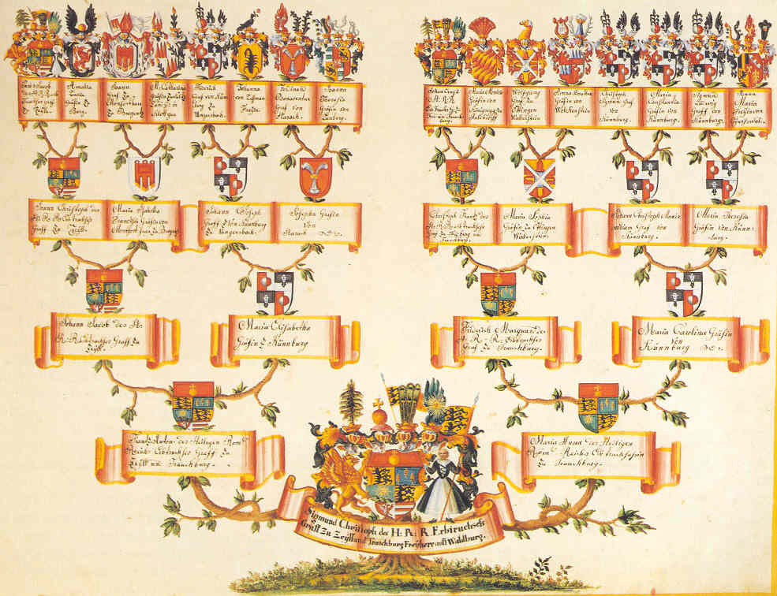

树是计算机编程当中很基础的一种数据结构，二叉树则是树中最基本的一种。虽然很多程序员在日常工作中未必会直接用到二叉树，但是对于这样一种基础的数据结构，熟练掌握其基本概念和操作，有助于关键场合不露怯。毕竟，所有的玩儿法都是由最基本最核心的理念衍生而成。
基本概念
二叉树，顾名思义，从根结点开始，每个结点可以分出最多两个子结点，没有子结点的结点叫叶子。
形态
满二叉树
“满”即是“饱满”：一个从根到叶子，每一个非叶子结点都分出两个子结点，看上去是那么的饱满。其总结点个数计算公式为：，为深度；第层结点个数计算公式为：。
完全二叉树
不饱满也不要紧，只要缺的都是右叶子而不缺左叶子。其深度计算公式为：。
二叉搜索树/红黑树
左子结点值小于父结点值，父结点值小于右子结点值，且左子树中所有结点值均小于根结点值，根结点值小于右子树中任一结点值。
基本操作
定义
1
2
3
4
5
6
7
8
9
10
11
12
13
14
15
16
17
18
| public class TreeNode {
private int value;
private TreeNode leftChildNode;
private TreeNode rightChildNode;
TreeNode() {
}
TreeNode(int value) {
this.value = value;
}
TreeNode(int value, TreeNode leftChildNode, TreeNode rightChildNode) {
this.value = value;
this.leftChildNode = leftChildNode;
this.rightChildNode = rightChildNode;
}
}
|
遍历
深度优先
深度遍历二叉树分为前序、中序和后序遍历，一般采用递归的实现形式比较简洁。无论哪种遍历，左结点一定是在右结点之前遍历，而所谓的前、中、后，则是中间结点在什么时机处理的区别。因此：
- 前序遍历 = 中 → 左 → 右
- 中序遍历 = 左 → 中 → 右
- 后序遍历 = 左 → 右 → 中
1
2
3
4
5
6
7
8
9
10
11
| public void traverseDepthFirst(TreeNode node) {
if (node == null) {
return;
}
System.out.println(node.value);
traverseDepthFirst(node.leftChildNode);
traverseDepthFirst(node.rightChildNode);
}
|
宽度优先
层序遍历二叉树一般可以用LinkedList或类似的数据类结合迭代来实现：
1
2
3
4
5
6
7
8
9
10
11
12
13
14
15
16
17
18
19
20
21
22
23
24
25
26
| public void traverseBreadthFirst(TreeNode rootNode) {
LinkedList<TreeNode> linkedList = new LinkedList<>();
if (rootNode == null) {
return;
}
linkedList.offer(rootNode);
while (!linkedList.isEmpty()) {
int size = linkedList.size();
for (int index = 0; index < size; index++) {
TreeNode node = linkedList.pop();
if (node == null) {
continue;
}
System.out.println(node.value);
linkedList.offer(node.leftChildNode);
linkedList.offer(node.rightChildNode);
}
}
}
|
聊完遍历来看看构建吧。可以通过两个数组来构建一个二叉树，这两个数组分别对应的是二叉树的前序及中序遍历，或者中序与后序遍历。下面这段代码就是通过递归的方式，用前序和中序遍历数组构建出一个二叉树。而利用中序和后序遍历构建与这种方式雷同，区别在于：前序数组的第一个元素代表父结点，后续数组中对应的是最后一个元素。
1
2
3
4
5
6
7
8
9
10
11
12
13
14
15
16
17
18
19
20
21
22
23
24
25
26
27
28
29
30
31
32
33
| public TreeNode buildTree(int[] preorder, int[] inorder) {
if (preorder == null || preorder.length == 0 || inorder == null || inorder.length == 0
|| preorder.length != inorder.length) {
return null;
}
int rootValue = preorder[0];
TreeNode root = new TreeNode(rootValue);
if (preorder.length == 1) {
return root;
}
int delimiterIndex = 0;
for (int number : inorder) {
if (number == rootValue) {
break;
}
delimiterIndex++;
}
int[] leftInorder = Arrays.copyOfRange(inorder, 0, delimiterIndex);
int[] rightInorder = Arrays.copyOfRange(inorder, delimiterIndex + 1, inorder.length);
int[] leftPreorder = Arrays.copyOfRange(preorder, 1, delimiterIndex + 1);
int[] rightPreorder = Arrays.copyOfRange(preorder, delimiterIndex + 1, preorder.length);
root.leftChildNode = buildTree(leftPreorder, leftInorder);
root.rightChildNode = buildTree(rightPreorder, rightInorder);
return root;
}
|
二叉树最核心的概念和操作基本就是这些，至于其它诸如合并、翻转、搜索、验证、最大……之类的问题，无非就是在遍历或构建的不同阶段实现不同的逻辑需求。所以，与其试图记住所有二叉树问题的答案，倒不如回过头来，找到二叉树概念的根，彻彻底底地吃透，从而任何问题都可以自己推导出解来。